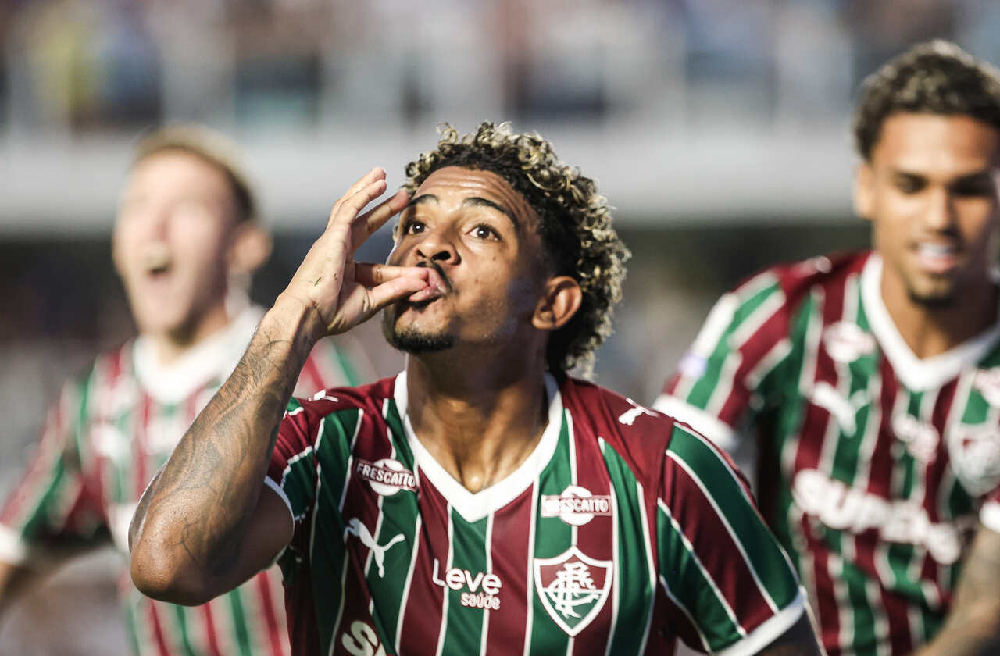

Liderança em jogo: Flamengo encosta e pressiona o Palmeiras
Enquanto o Verdão vence sem convencer, o Mengão faz 2 a 0 no Bahia e entra de vez na disputa

A 12ª rodada do Campeonato Brasileiro, disputada entre os dias 18 e 19 de abril, foi simplesmente um festival de gols, emoção e alguns resultados que ninguém esperava. Logo de cara, a Chapecoense tentou segurar, mas acabou atropelada pelo Botafogo, que venceu por 4 a 1 sem dó nem piedade. Daqueles jogos que o torcedor nem termina de comemorar um gol e já vem outro. Já em Vasco da Gama x São Paulo, melhor para o Cruzmaltino: vitória por 2 a 1, em um jogo brigado e decidido nos detalhes. Se alguém esperava emoção em Vitória x Corinthians… bom, passou longe. Um 0 a 0 daqueles que só quem é muito fã aguenta até o fim 😅 O Cruzeiro fez o dever de casa e venceu o Grêmio por 2 a 0, mostrando eficiência e controle do jogo. No domingo, o Internacional acabou surpreendido pelo Mirassol, que venceu por 2 a 1 — resultado daqueles que bagunçam qualquer palpite. Já Coritiba x Atlético Mineiro foi tenso até demais: vitória do Coxa por 2 a 0, com direito a expulsões e clima quente em campo. No confronto mais maluco da rodada, Santos x Fluminense entregaram um 3 a 2 pro Tricolor. Jogo aberto, ataque pra todo lado e defesa só olhando — entretenimento puro. O Palmeiras venceu o Athletico Paranaense por 1 a 0, mas no estilo “ganhei e fui embora”. Três pontos importantes, mas sem empolgar muito. Já o Red Bull Bragantino fez valer o mando e bateu o Remo por 4 a 2, em mais um jogo cheio de gols e com defesa passando sufoco. E fechando a rodada, o Flamengo venceu o Bahia por 2 a 0, resultado que coloca ainda mais pressão na briga pela liderança.